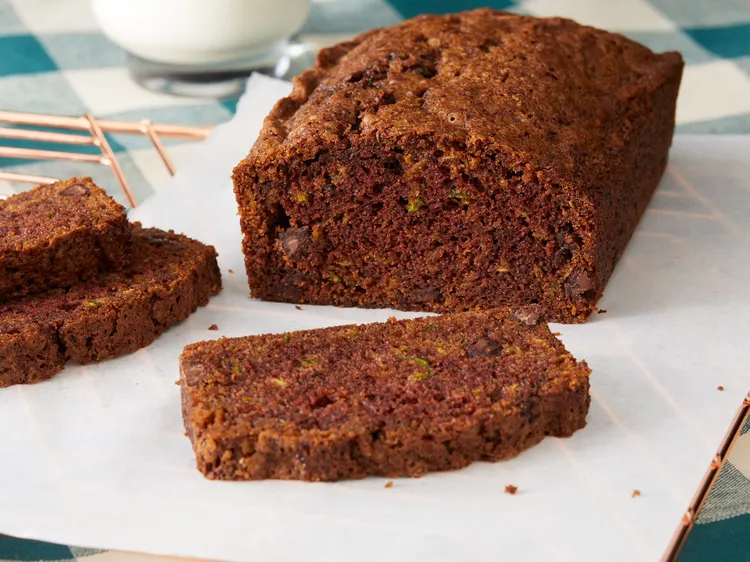

Chocolate Zuchini Bread Recipe

Chocolate Zuchini
This easy chocolate zucchini bread is moist and scrumptious with just the right
amount of spices — even the kids will love it! It's a great way to use up all of
those extra zucchini in your garden.
This chocolate zucchini bread is a decadent twist on a classic. Summer breads, like
loafs that use zucchini, are an amazing treat throughout the hot months. This recipe
is no exception.
Since this version has a sweet, chocolatey touch, you'll likely be craving this all
year round. Great at picnics and potlucks or after dinner for a little dessert.
Ingredients for Chocolate Zucchini Bread:
These are the ingredients you'll need to make this chocolate zucchini bread:
- Chocolate: You'll need two types of chocolate: unsweetened
chocolate and semisweet chocolate chips.
- Sugar: Sweeten things up with two cups of white sugar.
- Zucchini: Make sure to drain the grated zucchini well before
incorporating it into the batter. If the zucchini is too wet when incorporated, the
batter may not bake correctly.
- Oil: A cup of vegetable oil ensures tender, moist chocolate
zucchini bread. If you do not have vegetable oil, other oils with high smoke points will work best. Canola oil, grapeseed, safflower or soybean oil are all great options.
- Eggs: Three eggs lend more moisture and help bind the batter
together.
- Vanilla: Vanilla extract enhances the overall flavor of the
chocolate zucchini bread.
- Flour: Two cups of all-purpose flour give the chocolate zucchini
bread batter structure.
- Baking soda: A teaspoon of baking soda acts as a leavener, which
means it helps the bread rise.
- Salt: A teaspoon of salt takes the flavor up a notch, but it won't
make the sweet bread taste salty.
- Cinnamon: A teaspoon of ground cinnamon lends warmth and flavor.
How to Make it:
You'll find the full, step-by-step recipe below - but here's a brief overview of what you
can expect when you make this homemade chocolate zucchini bread:
- Melt the chocolate.
- Mix the wet ingredients, stir in the chocolate, and mix in the dry ingredients.
- Fold in the chocolate chips and transfer the batter to the greased loaf pans.
- Bake the chocolate zucchini bread loaves until a toothpick comes out clean.